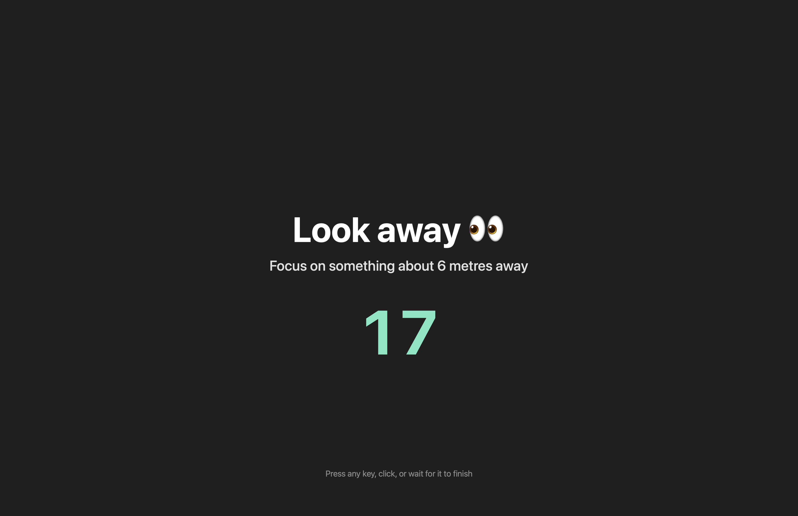
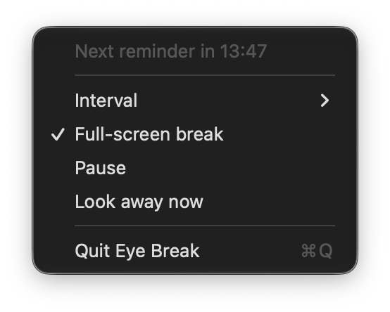

Menu-bar countdown
A live eye icon with a monospaced countdown to the next break.
macOS menu-bar app
If you spend a long time in front of a computer and forget to rest your eyes, you can end up with sore, dry eyes. Eye Break reminds you to look away for 20 seconds every 20 minutes — with a full-screen reminder that's hard to miss.
A live eye icon with a monospaced countdown to the next break.
Dims the whole screen and counts down the 20 seconds while you look away.
A sound and time-sensitive alert that cuts through Focus and notification settings.


EyeBreak-1.1.dmg from the Releases page.bash install.sh to copy, clear quarantine, and re-sign automatically../EyeBreak.app/Contents/MacOS/EyeBreak --demo
Click the 👁️ menu-bar item to set the interval, toggle the full-screen break, pause, or look away now.